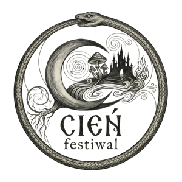

It is a system that can be understood. I bring together neuroscience, work with unconscious patterns and everyday choices — so change can become meaningful and sustainable.
Six short questions help name the dominant area. This is an educational reflection tool — not a diagnosis or clinical assessment.
01 · RECENT DAYS
What do you notice first when the day becomes too intense?
02 · RECOVERY
Which sentence best describes your rest?
03 · ATTENTION
What interferes most with your focus?
04 · EMOTIONS
When a difficult emotion appears, what happens first?
05 · CHANGE
What makes change most difficult?
06 · FIRST STEP
What do you need most right now?
DOMINANT DIRECTION
Regulation and felt safety
Your system may first need relief from constant mobilisation. A consultation mapping pressures and bodily signals can be a helpful beginning.
DOMINANT DIRECTION
Working with an automatic pattern
You may already understand a great deal, but insight alone is not always enough. We can explore whether hypnotherapy fits the reaction sustaining the pattern.
DOMINANT DIRECTION
Recovery, energy and attention
A useful first step is looking at sleep, daily rhythm, cognitive load and available resources — without adding more pressure.
DOMINANT DIRECTION
Your relationship with food and energy
You may benefit from an approach connecting neuroscience with real life, without dietary extremes or miracle promises.
This result is not a diagnosis. If symptoms are severe or sudden, consult an appropriate healthcare professional.
We translate knowledge about food, circadian rhythm, sleep and energy into choices you can sustain. No detoxes, miracle ingredients or another rigid regime.
Select a stage to see the detail. A full session leaves room for unhurried, in-depth work; the timing below remains flexible.
0–15 MIN
Connection and goal
We begin with conversation.
We clarify what brings you here, what you expect and what would count as useful change. You can ask questions and set boundaries.
15–25 MIN
Safety
We agree on the framework.
We discuss communication, a stop signal and what helps you feel comfortable. Hypnosis does not mean losing control.
25–35 MIN
Focused attention
Attention gently turns inward.
You can hear, speak and pause at any moment. There is no single “correct” feeling of trance.
35–100 MIN
Therapeutic work
65 minutes of in-depth work with the chosen pattern.
This is the central and longest part of the session. I adapt language, pace and method to your goal and moment-to-moment response, leaving time to deepen the process, work with resources and consolidate new responses without pressure.
100–110 MIN
Return
We return to ordinary attention.
Your nervous system gets time for a calm transition. We check how you feel and do not rush integration.
110–120 MIN
Integration
We name insights and the next step.
We organise what mattered and choose a simple way to observe change after the session. The goal is independence, not dependence on the process.
Honest qualification
Is this way of working right for you?
Premium care also means knowing when to say “not now” and recommending the appropriate support.
✓
This may be a good direction if…
You want a conscious, collaborative process and are ready to observe your own responses.
you want to work with tension, a habit or a repeating pattern
you value understanding over miracle promises
you can create a private, quiet space for a Zoom session
you accept that pace and outcomes are individual
!
Consult another professional first if…
Safety comes before beginning a process.
you are experiencing an acute mental health crisis or immediate danger
there are symptoms of psychosis, mania or significant disorientation
you would be under the influence of alcohol or substances during the session
you need diagnosis, medical treatment or crisis intervention
In immediate danger, contact your local emergency number or crisis service. Hypnotherapy does not replace medical treatment.
Process, not miracle
Anonymous stories of real work.
Composite, anonymised examples showing how a process may be structured. They are not guarantees of outcome.
TENSION · 5 SESSIONS
“I understand stress, but my body still cannot let go.”
Starting point
Persistent mobilisation and difficulty moving into rest.
Direction
Recognising cues of safety, hypnotherapy and micro-practices between sessions.
Observed change
Earlier recognition of tension and more choice in responding.
The goal was not a stress-free life, but a more flexible response.
PATTERN · 10 SESSIONS
“I know why I do it. I want to stop returning to the same place.”
Starting point
Strong insight alongside an automatic relational pattern.
Direction
Understanding the pattern’s function, building alternatives and integrating them in daily life.
Observed change
More pause between trigger and action, with a kinder inner dialogue.
Change was not linear. We reviewed the process rather than judging a single day.
ENERGY · 3 CONSULTATIONS
“I have every supplement, yet I am still exhausted.”
Starting point
Irregular rhythm, overload and conflicting nutrition information.
Direction
Prioritising sleep, meal regularity and reducing unnecessary interventions.
Observed change
More stable energy and a simpler plan that could be maintained.
When medical assessment is needed, consultation does not replace a doctor.
Your pathway
From the first conversation to lasting change.
The process has structure, but it is never one-size-fits-all. Every stage follows what you genuinely need.
We discuss what brings you here and what you expect. We check whether my approach is suitable and safe for your situation.
02
FIRST SESSION
Neuroscience consultation
We map patterns, resources and pressures. Together, we set a realistic goal and choose the right form of support.
03
PERSONALISED PROCESS · ZOOM
Hypnotherapy sessions
We work with your chosen area and regularly review your response and progress. Everything happens at your pace.
04
INTEGRATION
Follow-up
We consolidate change, organise insights and build a plan that supports your independence beyond the process.
15+YEARS CLOSE TO SCIENCE
About me
Science taught me to ask better questions.
“I connect what can be measured with what is deeply human — so knowledge about the brain can genuinely support change.”
I am a hypnotherapist and neuroscientist. I graduated in Neurosciences from the University of Cincinnati, Ohio, and from the Professional School of Hypnotherapy in Poland. I am certified by the International Hypnosis Association and have completed Psychedelic Guide Training, focused on responsible support in expanded states of consciousness.
As a member of the SACRUM Core Team and coordinator of CIEŃ Festival, I create spaces where development meets safety, human connection and reliable knowledge of the nervous system. I do not place science in opposition to experience — I use each to better understand the other.
I also know health from the practical side of everyday life. I am a former competitive swimmer, passionate about movement and conscious nutrition, and a former head chef at Stara Kuźnia. That experience taught me to translate theory into the things that matter: rhythm, taste, energy and choices that can truly last.
neurosciencecertified hypnotherapyexperience integrationhealth in practice
Collaboration
Partners
Brands, schools and initiatives connected by a shared direction: knowledge, development and responsible work with people.
Psychedelic therapy center

Culture and awareness festival
Hypnotherapy education school
Start
60 seconds for your nervous system
Before you move on, make space for a breath.
A short pause with a longer exhale. It is not therapy — simply a small experience of how we work: without rushing and without force.
Clear terms
An investment in a process, not a promise.
Before choosing a package, we meet for a free call and decide together which form of support makes sense.
SINGLE SESSION · ZOOM
Initial hypnotherapy session
700PLN / 2 H
For people who want to experience the method and begin working with a specific issue.
Yes. Therapeutic hypnosis is neither sleep nor a loss of will. You remain aware, you can speak, pause or end the process, and you will not do anything against your values.
How do I know which form of support is right for me?+
That is exactly what the free consultation is for. We discuss your situation and choose the most appropriate first step — hypnotherapy, a consultation or, when needed, a referral to another specialist.
Are English sessions available online?+
Yes. Hypnotherapy in English is available worldwide via Zoom. During our first conversation, we will discuss the practical setup for a private and comfortable session.
Does hypnotherapy replace psychotherapy or medical care?+
No. Hypnotherapy and consultations do not replace medical diagnosis, psychotherapy or psychiatric treatment. When appropriate, I recommend contacting a suitable healthcare professional.
Do I need to purchase a package immediately?+
No. We begin with a conversation and a single session. A package only makes sense when both of us see value in continuing the work regularly.
The first step comes with no obligation
You do not need to know where to begin. You only need to begin.
A calm 20-minute conversation in English. No sales script. No pressure. Space for your questions.